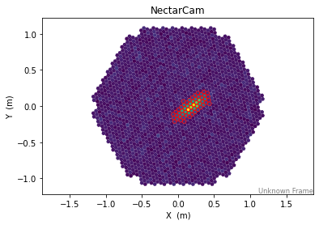
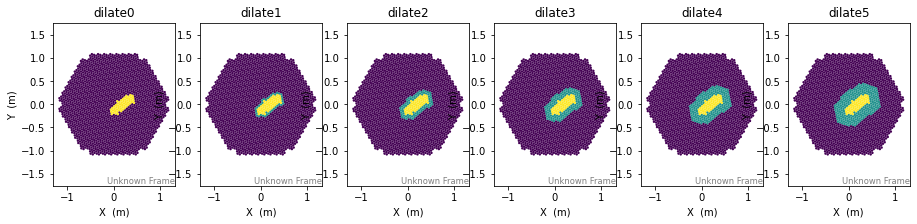

Basic Image Cleaning and Dilation¶
Here we create an example shower image, do a tail-cuts (picture/boundary) cleaning, and then dilate the resulting cleaning mask by several neighbor pixels
[1]:
%matplotlib inline
from matplotlib import pyplot as plt
import astropy.units as u
[2]:
from ctapipe.instrument import SubarrayDescription
from ctapipe.visualization import CameraDisplay
from ctapipe.image import toymodel, tailcuts_clean, dilate
# Load a camera from an example file
subarray = SubarrayDescription.read("dataset://gamma_prod5.simtel.zst")
geom = subarray.tel[100].camera.geometry
# Create a fake camera image to display:
model = toymodel.Gaussian(
x=0.2 * u.m,
y=0.0 * u.m,
width=0.05 * u.m,
length=0.15 * u.m,
psi="35d",
)
image, sig, bg = model.generate_image(geom, intensity=1500, nsb_level_pe=5)
Apply the image cleaning:
[3]:
cleanmask = tailcuts_clean(geom, image, picture_thresh=10, boundary_thresh=5)
clean = image.copy()
clean[~cleanmask] = 0.0
disp = CameraDisplay(geom, image=image)
disp.highlight_pixels(cleanmask, color="red")

Now dialte the mask a few times:
[4]:
from ctapipe.image.cleaning import dilate
[5]:
def show_dilate(mask, times=1):
m = mask.copy()
for ii in range(times):
m = dilate(geom, m)
CameraDisplay(
geom, image=(m.astype(int) + mask.astype(int)), title="dilate{}".format(times)
)
[6]:
plt.figure(figsize=(18, 3))
for ii in range(0, 6):
plt.subplot(1, 7, ii + 1)
show_dilate(cleanmask.copy(), times=ii)
